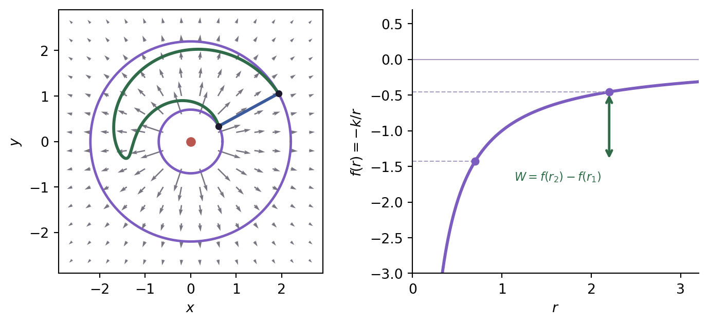

Ver el código de la figura
import numpy as np
import matplotlib.pyplot as plt
VIOLETA, VIOLETA2, TINTA, GRIS = "#7c5cbf", "#b48ec8", "#1e1a2e", "#a99fc0"
VERDE, AZUL = "#2f6b48", "#3a5a9c"
k, r1, r2 = 1.0, 0.7, 2.2
xq = np.linspace(-2.6, 2.6, 14) # par: la grilla no pisa el origen
XQ, YQ = np.meshgrid(xq, xq)
RR = np.hypot(XQ, YQ)
dentro = RR > .38
XQ, YQ, RR = XQ[dentro], YQ[dentro], RR[dentro]
U, W = k*XQ/RR**3, k*YQ/RR**3
norma = np.hypot(U, W)
# largo proporcional a la raiz de la norma, para que el decaimiento 1/r^2 se
# note sin que las flechas de afuera desaparezcan
largo = np.sqrt(norma / norma.max())
fig, (ax, ax2) = plt.subplots(1, 2, figsize=(7.4, 3.4))
ax.quiver(XQ, YQ, U/norma*largo, W/norma*largo, color=TINTA,
width=.005, scale=11, alpha=.6)
t = np.linspace(0, 2*np.pi, 300)
for R in (r1, r2):
ax.plot(R*np.cos(t), R*np.sin(t), color=VIOLETA, lw=1.8)
s = np.linspace(0, 1, 300)
# camino radial y camino con rodeo: mismos extremos, distinta ruta
rad = r1 + (r2 - r1)*s
ax.plot(rad*np.cos(0.5), rad*np.sin(0.5), color=AZUL, lw=2.2)
ang = 0.5 + 2.9*np.sin(np.pi*s) # arranca y termina en el mismo angulo
ax.plot(rad*np.cos(ang), rad*np.sin(ang), color=VERDE, lw=2.2)
ax.plot([r1*np.cos(.5), r2*np.cos(.5)], [r1*np.sin(.5), r2*np.sin(.5)], "o",
color=TINTA, ms=4)
ax.plot(0, 0, "o", color="#b8564f", ms=6)
ax.set_aspect("equal"); ax.set_xlabel("$x$"); ax.set_ylabel("$y$")
ax.set_xlim(-2.9, 2.9); ax.set_ylim(-2.9, 2.9)
r = np.linspace(0.28, 3.2, 400)
ax2.plot(r, -k/r, color=VIOLETA, lw=2.2)
ax2.axhline(0, color=GRIS, lw=.8)
for R in (r1, r2):
ax2.plot([0, R], [-k/R, -k/R], color=GRIS, lw=.8, ls="--")
ax2.plot(R, -k/R, "o", color=VIOLETA, ms=5)
ax2.annotate("", xy=(r2, -k/r2), xytext=(r2, -k/r1),
arrowprops=dict(arrowstyle="<->", color=VERDE, lw=1.8))
ax2.annotate("$W = f(r_2) - f(r_1)$", (r2, -k/r1), textcoords="offset points",
xytext=(-6, -14), ha="right", fontsize=8.5, color=VERDE)
ax2.set_xlabel("$r$"); ax2.set_ylabel("$f(r) = -k/r$")
ax2.set_ylim(-3, .7); ax2.set_xlim(0, 3.2)
ax2.spines[["top", "right"]].set_visible(False)
fig.tight_layout()
plt.show()